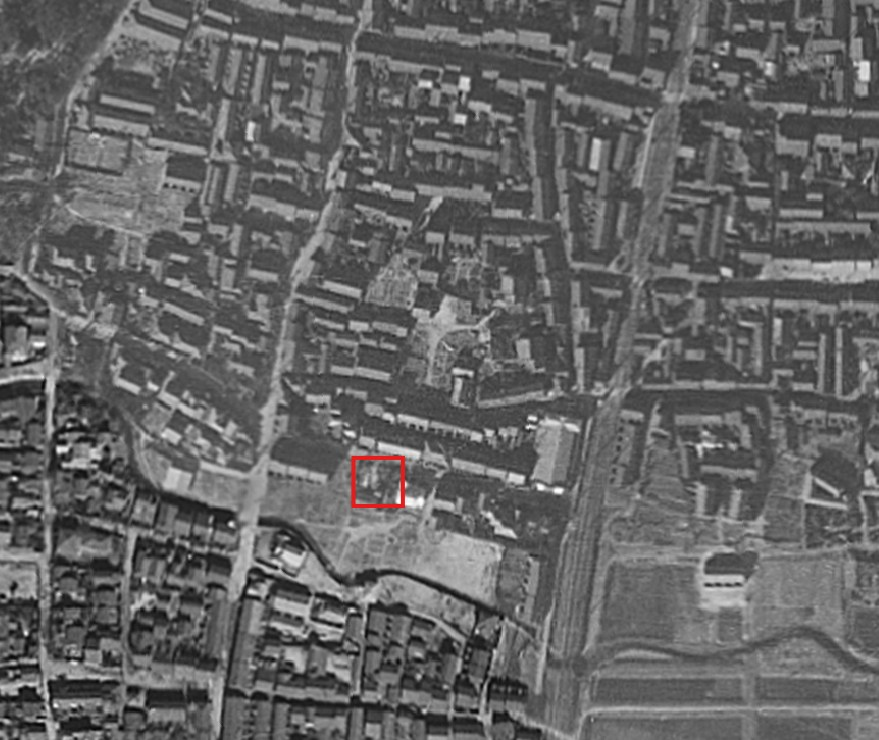
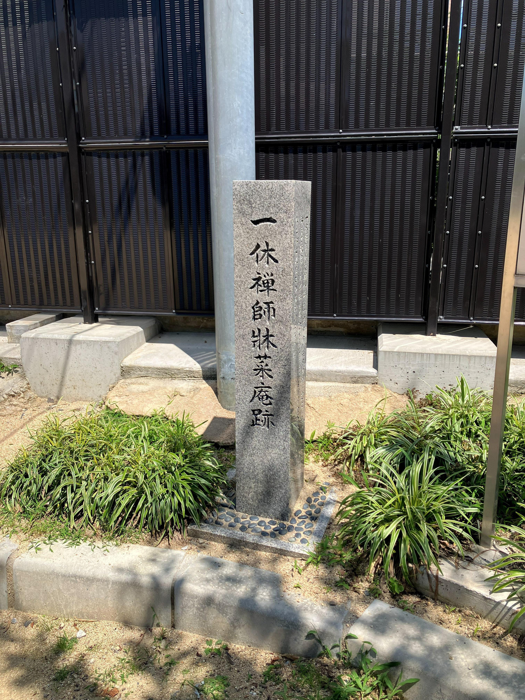
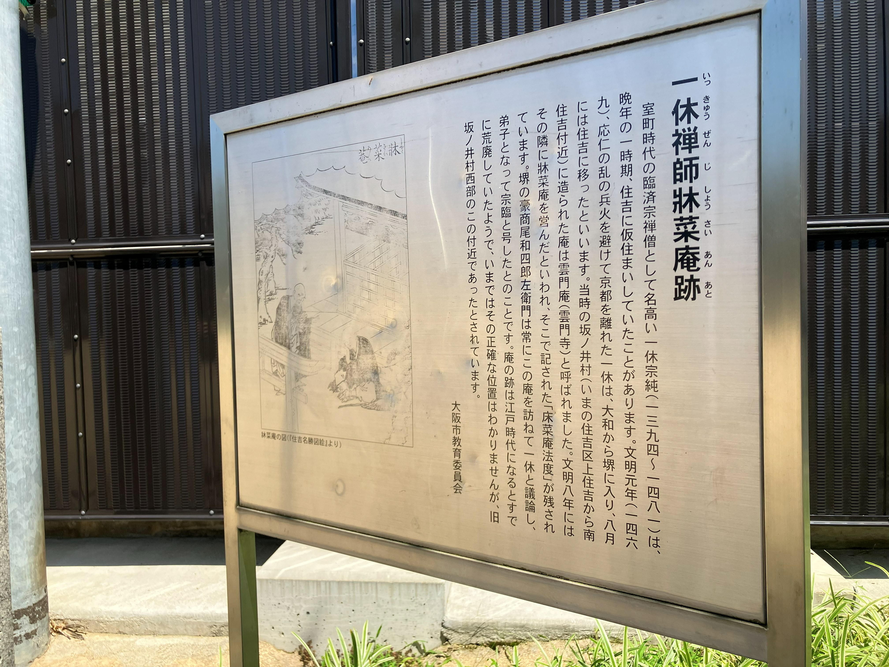

住吉大社の裏手にあった一休さんの庵――牀菜庵跡と、晩年の「公」と「私」
上住吉西公園の南東の隅に、ひっそりと石碑が立っている。「一休禅師牀菜庵跡」。南海高野線・住吉東駅から南へ歩いて5分ほど。住吉大社の賑わいからは少し離れた、住宅街の中の小さな公園だ。
アニメの「一休さん」のイメージからは想像しにくいが、晩年の一休宗純はこの住吉の地で約10年を過ごした。しかも石碑の場所と実際の庵の跡地は少しずれている。本当の牀菜庵は上住吉2丁目9付近にあったとされ、昭和初期まで竹藪として痕跡を残していたが、宅地開発で消えた。今回は、この牀菜庵を起点に、一休の住吉時代を一次資料から掘り下げてみた。見えてきたのは、「破戒僧」でも「真面目な高僧」でもない、義理堅くてしたたかな老禅僧の姿だった。


応仁の乱と放浪――76歳、住吉へたどり着くまで
応仁元年（1467年）、一休74歳。京都を焼き尽くす応仁の乱が始まる。一休が暮らしていた瞎驢庵は兵火で焼失。東山にあった居室「虎丘庵」を急いで解体し、京田辺・薪の酬恩庵へ移築した。この虎丘庵は現存しており、銀閣寺・東求堂の同仁斎と同じ造りの室町初期の書院造建築として京都府の指定有形文化財になっている。
だが薪村にも戦火は迫る。一休は瓶原の慈済庵、奈良、堺と転々とし、文明元年（1469年）、76歳でようやく住吉にたどり着いた。
住吉の三つの庵――「公」と「私」の使い分け
住吉時代の一休を追ってみると、面白いことに三つの拠点を使い分けていたことが見えてくる。
松栖庵（しょうせいあん）――津守家が用意した最初の庵
一休が住吉で最初に入ったのは「松栖庵」だった。年譜には「住吉浦之松栖菴、此地盖以卓然和尚甘棠遺蔭可幕」とある。「卓然和尚」とは住吉大社の宮司・津守氏の出身で大徳寺第8世住持になった卓然宗立のこと。つまり松栖庵は津守家ゆかりの庵で、一休はこの縁を頼って住吉に来たのだ。
住吉浦、つまり大社の西側・海岸寄りにあったとされる。後に一休が牀菜庵に移った後も「旧栖」（古い住まい）として残っていた形跡がある。年譜の84歳の条に「墨江之旧栖、神主出迎驩甚」と、神主が大喜びで出迎えたという記述がある。
雲門庵（うんもんあん）――豪商が建てた大徳寺復興の前線基地
翌文明2年（1470年）、堺の豪商・尾和四郎左衛門が住吉の「坂井」に庵を建て、一休を招いた。「雲門庵」と称されたこの庵は、大徳寺復興のための「公」の拠点だった。なお、「宗臨」の名はこの時点ではまだない。現地の案内板によれば、四郎左衛門が一休の弟子となり「宗臨」の法号を授かったのは後の牀菜庵時代のことである。
ここで一つ、面白い問題がある。「雲門」の名は誰がつけたのか。
年譜は「扁其菴曰雲門」と一休の命名であるかのように書いているが、国史大辞典は「檀越が坂井に雲門寺をはじめた」と、四郎左衛門が始めたという書き方をしている。雲門の由来は応仁の乱で焼けた大徳寺方丈内の雲門（大灯国師の塔所）だが、こういう格式ある名前は大徳寺再興を志す檀越のほうが付けそうだ。
なぜそう思うかというと、後に一休が自分で建てた庵の名前が「牀菜庵」――「禅床の下で菜っ葉を植える」という、あまりにも飄々とした名前だからだ。この落差は、「公」の名前と「私」の名前の違いを示しているように見える。
雲門庵の名は大徳寺へ「返却」された
住吉松葉大記にこういう記述がある。
「大徳寺方丈云雲門、応仁兵乱大徳寺焼、一休以住吉雲門庵寄本山、遂以床菜菴名焉」
一休は住吉の雲門庵の名を大徳寺本山に「寄した」（返した）。そして自分の庵を牀菜庵と名付けた。現在の大徳寺方丈内にある大灯国師の塔所は、この名を引き継いだ「雲門庵」である。
四郎左衛門が大徳寺復興のために建てて名も付けた庵を、復興が軌道に乗ったら名前ごと本山に返した。一休は檀越の善意にきちんと義理を立てていたのだ。
森女との出会い――そして「空白の5年」
文明2年（1470年）11月、77歳の一休は住吉大社の神宮寺・薬師堂で一人の女性と出会う。盲目の旅芸人、森女（しんじょ）。一休より50歳以上若かったとされる。
翌年、78歳で二人は再会し、同棲を始めた。
ここで時系列を追うと、不思議な空白が浮かぶ。森女との同棲が78歳。だが牀菜庵が建てられたのは年譜によれば83歳（文明8年、1476年）。この5年間、二人はどこにいたのか。
雲門庵は宗臨がバックについた大徳寺復興の「公」の拠点だ。そこに盲目の愛人を連れ込むのは、いかに一休でもさすがにまずい。森女は「森侍者」（仏弟子）という名目こそあったが、弟子たちの目もある。
しかもこの間、一休は住吉にずっといたわけではない。文明6年（1474年）には大徳寺第47世住持に就任し（即日退去するのだが）、翌年には京田辺の虎丘庵で自分の生前墓（慈揚塔）まで建てている。
水上勉は『一休を歩く』で、「おそらく、松栖庵へ一休は森侍者をつれていったにちがいない」と推理している。松栖庵は津守家の庵で、雲門庵とは管轄が違う。もし森女が津守氏の親族か巫女であったなら、この庵こそ二人が自然に会える場所だったことになる。
牀菜庵――雲門庵の隣に建てた「自分の庵」
文明8年（1476年）、83歳。一休は雲門庵の隣の野菜畑の空き地に茅葺きの庵を建て、「牀菜庵」と名付けた。現地の案内板にも「その隣に牀菜庵を営んだ」と記されている。「公」の拠点のすぐ隣に「私」の庵を構えたわけだ。
そしてこの牀菜庵時代、堺の尾和四郎左衛門がしきりに庵を訪ねて禅問答を重ね、ついに一休の弟子となって「宗臨」の法号を授かった。パトロンから師弟へ――関係が質的に変わったのがこの時期だった。宗臨が後に大徳寺の仏殿を再建するのは、単なる寄進ではなく、弟子として師の悲願を引き継ぐ行為だったことになる。

この名前の由来が面白い。出光美術館に現存する一休自筆の一行書二幅にその出典がある。
「鐘樓上念讃」「床脚下種菜」
鐘楼の上で読経し、禅床の下で野菜を植える。中国宋代の禅僧・黄龍慧南の語録に由来し、一休が敬愛した虚堂智愚の語録にも見える禅語だ。場違いなことをわざとやるところに悟りがある、という禅的な逆説。
表では大徳寺住持、裏では愛人と隠棲。「鐘楼の上で念仏、禅床の下で野菜」――この庵の名前自体が、自分の二重生活への自嘲だったのかもしれない。
翌年には庵の南の竹林に「多香軒」という納涼用のあずまやも増築している。文明10年（1478年）、住吉を去る際には村人がみんな泣いてすがったと伝わるから、この地での暮らしは穏やかなものだったのだろう。
終の住処、酬恩庵――「死にとうない」
住吉を去った一休は、森女を連れて京田辺の酬恩庵に帰った。85歳。
酬恩庵はもともと大応国師（南浦紹明）が開いた妙勝寺を前身とする。元弘の戦火で百年以上荒廃していたのを、一休が63歳で再興し、師の恩に酬いるという意味で「酬恩庵」と名付けた場所だ。大徳寺住持になってからも、ここから京都の大徳寺まで通っていた。
文明13年（1481年）11月21日、88歳。一休はマラリアにより酬恩庵で示寂した。臨終に「死にとうない」と述べたと伝わる。禅僧の最後の言葉としてはあまりにも人間的だが、それがいかにも一休らしい。
森女は一休の死後も健在で、小袖を売って墓の建築費を工面した。大徳寺真珠庵での十三回忌の香典帳にも名を連ね、銀子を寄進している。盲目の流浪芸人にしては不思議な経済力で、津守氏との繋がりを想像させる。
一休の墓所「宗純王廟」は、後小松天皇の落胤説に基づき宮内庁が陵墓として管理している。門の菊花紋の透かし彫りから中を覗くことはできるが、立ち入りはできない。
一休の死後、宗臨は生前の約束通り大徳寺塔頭「真珠庵」を建立し、一休を開祖とした。最後まで義理を果たし合う関係だった。
補論：地獄太夫は森女の「分身」か？
一休の女性関係を語るとき、もう一人忘れてはならない名前がある。「地獄太夫」だ。
堺の遊里にいたとされる伝説の遊女で、地獄変相を刺繍した打掛を身にまとい、念仏を唱えながら客を迎えたという。一休と歌を交わして意気投合し、師弟関係を結んだと伝わる。
「聞きしより見て恐ろしき地獄かな」（一休）
「しにくる人のおちざるはなし」（地獄太夫）
河鍋暁斎や月岡芳年の浮世絵で広く知られるこの組み合わせだが、地獄太夫の実在はかなり怪しい。初出は一休の死から約190年後の『一休関東咄』（17世紀）。さらに有名になったのは山東京伝の『本朝酔菩提全伝』（1800年前後）で、同時代資料には一切登場しない。室町時代の絵画にも描かれていない。
一方、森女は年譜と狂雲集という一次資料に明確に記録されている。ここで両者を並べてみると、構造の一致に気づく。
- 場所：森女は住吉大社薬師堂で出会い、地獄太夫は隣町の堺の遊里で出会い
- 身分：森女は盲目の旅芸人、地獄太夫は遊女。ともに「芸能」の世界の女性
- 関係：森女は「森侍者」として弟子に。地獄太夫も一休に師弟関係を結ぶ
- 境遇：森女は盲目で流浪の身、地獄太夫は山賊に攫われ遊女に売られた悲運の女
そして面白いのは反転している部分だ。森女は一休より長生きして、小袖を売って墓を建てた。地獄太夫は若くして死に、一休が看取って塚を建てた。実話の構造を裏返して、よりドラマチックに仕立てている。
地獄太夫の辞世とされる「我死なば焼くな埋むな野に捨てて飢えたる犬の腹をこやせよ」も、一休自身の死生観そのものだ。江戸の戯作者が一休の思想を「弟子の遊女の辞世」に託した可能性がある。
「森女モデル説」を明言した学術論文は見つかっていない。だが、狂雲集を通じて森女の存在は江戸時代にも知られていたはずだ。「一休に愛された堺・住吉周辺の芸能の女」を、より華やかでドラマチックなキャラクターに仕立て直した――そういう創作過程は十分に想像できる。森女が「実」なら、地獄太夫は「虚」。だが虚の中に実の骨格が透けて見える。それもまた、「鐘楼の上で念仏、禅床の下で野菜」という一休の世界にふさわしい話かもしれない。
おわりに――石碑の前で考えたこと
上住吉西公園の石碑は、実際の牀菜庵跡から少しずれた場所にある。本当の跡地は住宅地に変わり、当時の蹲（つくばい）や石塔、井筒は土地を開発した松井家に移され、今も大切に守られているという。
だがこの「ずれ」こそが、一休の住吉時代を象徴しているようにも思える。年譜が書く「公」の一休と、実際に庵で暮らした「私」の一休。雲門庵という格式ある名前と、牀菜庵という飄々とした名前。大徳寺住持という肩書と、裏手の菜っ葉畑での愛人との暮らし。
一休は「不真面目な破戒僧」でも「真面目な法灯の守護者」でもなく、その両方を同時に、しかも矛盾なく生きた人物だった。雲門庵の「隣」に牀菜庵を建てたという事実が、それを端的に示している。大徳寺復興の拠点のすぐ横で、森女と暮らし、弟子を取り、堺の貧しい扇屋のために絵を描く。「公」と「私」は隣り合わせだった。
住吉大社に参拝したら、東側の住宅街を少し歩いてみてほしい。菜っ葉畑はもうないけれど、550年前、ここで老禅僧が盲目の女性と静かに暮らしていた。
参考文献・参考リンク
- 『東海一休和尚年譜記』（Wikisource）
- 出光美術館研究紀要 第29号（2024年）「一休宗純と住吉 牀菜庵伝来品についての一考察」
- 一休宗純｜国史大辞典・世界大百科事典（ジャパンナレッジ）
- 一休宗純（コトバンク）
- 一休宗純（ジャパンサーチ）
- 狂雲集（コトバンク）
- 一休宗純 - Wikipedia
- 酬恩庵 - Wikipedia
- 松栖庵 - SHINDEN
- 地獄太夫 - Wikipedia
- 地獄太夫 - ArtWiki（立命館大学）
- 酬恩庵一休寺 公式サイト
- 酬恩庵一休寺 境内案内
- 酬恩庵一休寺 一休年表
- 大阪市「一休禅師牀菜庵跡」
- 京田辺市観光「酬恩庵一休寺」
- 京都府「一休寺の紅葉」
- 大阪あそぼ 南海住吉大社駅コース（PDF）
- 酬恩庵一休寺庭園（おにわさん）
- 一休寺虎丘庵庭園（おにわさん）
- 地獄太夫と一休（七緒・プレジデント社）
- 伝説の遊女・地獄太夫（和樂web）
- 地獄太夫とは（草の実堂）
- 住吉大社で森女と邂逅 溺る一休（きままな旅人）
- 一休宗純とは？生涯・とんちの逸話（true-buddhism.com）